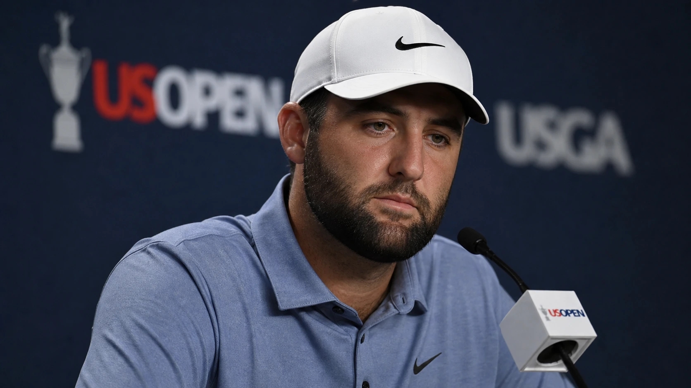

Quick answer: After Wyndham Clark won the 2026 U.S. Open while a hostile New York crowd openly rooted against him, Scottie Scheffler, who played alongside him in the final group, didn't dodge the topic. He called the crowd tough, admitted some of it went too far when fans cheered Clark's mistakes, and summed it up by saying he can't control fan behavior. He also praised Clark for handling it, calling him a well-deserving champion.
Clark's victory was nearly drowned out by heckling from app-wielding bettors, a scene we broke down in full.

It was a measured, honest answer from the world No. 1, and it carried more weight because the crowd had spent all day on Scheffler's side. Here is what he said and why it mattered.
What Did Scottie Scheffler Say About the Heckling?
He told it straight. Scheffler said the crowd was tough and that New Yorkers are tough people, acknowledging there was a big, energized turnout. Then he drew a clear line. While he enjoys fans cheering for him, he said it can get to be too much when balls roll off greens and you start hearing cheers for that, and he admitted that part felt like a bit much.
But he refused to turn it into a controversy. His bottom line was simple: at the end of the day, he can't control fan behavior. He was not going to apologize for a crowd that happened to be on his side, but he also was not going to pretend the nastier moments were fine. It was an honest middle ground from a player who had every incentive to just stay quiet.
Why Was the Crowd Heckling Wyndham Clark?
Two reasons, and they fed off each other. First, Scheffler was the sentimental favorite. He was chasing the career Grand Slam on his 30th birthday, which fell on Father's Day, and the gallery desperately wanted to witness history. They sang him happy birthday on the first tee and again on the last. Clark, paired with him, became the obstacle.
Second, Clark carried some baggage. He has a recent history of on-course outbursts, including smashing a sign at the 2025 PGA Championship and wrecking a locker at last year's U.S. Open. He has spent the past year apologizing for it. The New York crowd, the same one that drew criticism for its treatment of Team Europe at the Ryder Cup at nearby Bethpage, was not in a forgiving mood. The result was a steady stream of jeers, calls of "get in the bunker," and at least one fan removed by police.
What Did Scheffler Mean by "Being in the Arena Is Not for Everybody"?
He was making a point about the reality of elite sport. Scheffler followed up his crowd comments by saying that being in the arena is not for everybody, and he pointed to his own career as proof. He has played in front of galleries that loved him and galleries that were firmly against him, citing The Open at Portrush, where the crowds were behind hometown-area hero Rory McIlroy.
It was not a complaint. It was closer to a shrug. Handling a hostile or one-sided crowd is part of the job at the top of the game, and Scheffler was essentially saying that the players who win majors are the ones who can block it out. Which led directly to his praise for the man who just beat him.
Did Scheffler Defend Wyndham Clark?
Yes, and pointedly. Rather than let the story stay about the abuse, Scheffler pivoted it into respect for Clark. He said the day showed a lot about Clark, about how he handled not just a brutal golf course but the crowd as well, and he flatly called him a well-deserving champion.
He went further on the golf itself, praising the birdie Clark made from the deep fescue on the par-5 16th that effectively won the tournament, and describing Clark as a very underrated talent. Coming from the best player in the world, on a day he had every reason to be frustrated, that was a genuine tip of the cap.
Was Scheffler Frustrated About Losing the Grand Slam?
If he was, he kept it in check. Scheffler finished tied for fourth at even par, never mounting the charge the moment seemed to call for. He admitted he felt close again and that it came down to little things here and there. He will have to wait until next year at Pebble Beach for another shot at completing the career Grand Slam.
Notably, when reporters kept pushing the crowd angle, Scheffler shut it down politely. He said that was as much as he wanted to elaborate, and that he was happy to talk about golf if anyone wanted to. It was a small but telling moment. He had said his piece, he had given Clark credit, and he was not interested in fueling a days-long story about fan behavior.
The Raw Read
Scheffler handled this the way you would expect from a player who has nothing left to prove. He did not whine, did not dodge, and did not throw the crowd under the bus for cheering him on. He simply admitted the obvious, that cheering a man's bad shots crosses a line, while accepting the part he genuinely cannot control.
The classy move was making sure Clark got his flowers. It would have been easy for the runner-up, on his birthday, to let the story be about the toxic atmosphere or his own near-miss. Instead, Scheffler used his platform to call Clark a deserving champion and an underrated talent. That is the response of someone secure enough to lose well. The crowd may not have shown Clark much respect on Sunday, but the best player in the world did.
Frequently Asked Questions
What did Scottie Scheffler say about the Wyndham Clark heckling?
He called the crowd tough, said it got to be too much when fans cheered Clark's mistakes, and concluded that he can't control fan behavior. He also praised Clark as a well-deserving champion.
Why were fans heckling Wyndham Clark at the U.S. Open?
They favored Scheffler, who was chasing the career Grand Slam on his birthday, and some held Clark's past on-course outbursts against him. Several hecklers were removed by police.
Did Scottie Scheffler win the 2026 U.S. Open?
No. He finished tied for fourth at even par. Wyndham Clark won at 4 under, one shot ahead of Sam Burns.
What did Scheffler say about Wyndham Clark's game?
He praised Clark's birdie from the fescue on the 16th and called him a very underrated scrambler.
Will Scottie Scheffler get another chance at the career Grand Slam?
Yes. He needs to win the U.S. Open to complete it, with his next opportunity coming at Pebble Beach next year.